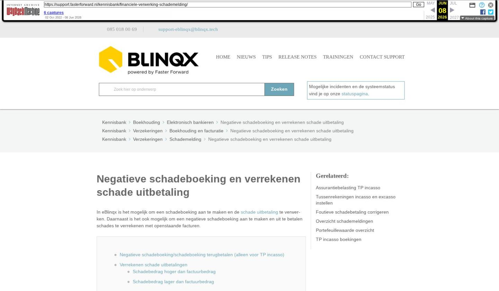

Negatieve schadeboeking en verrekenen schade uitbetaling

Tekstinhoud
Title: Negatieve schadeboeking en verrekenen schade uitbetaling | Support
URL: https://web.archive.org/web/20260608012513/https://support.fasterforward.nl/kennisbank/financiele-verwerking-schademelding/
Source element: <article>
---
Negatieve schadeboeking en verrekenen schade uitbetaling
In eBlinqx is het mogelijk om een schadeboeking aan te maken en de schade uitbetaling te verwerken. Daarnaast is het ook mogelijk om een negatieve schadeboeking aan te maken en uit te betalen schades te verrekenen met openstaande facturen.
Negatieve schadeboeking/schadeboeking terugbetalen (alleen voor TP incasso)
Verrekenen schade uitbetalingen
Schadebedrag hoger dan factuurbedrag
Schadebedrag lager dan factuurbedrag
Intern schadenummer gebruiken in boekhouding
Foutieve schadeboeking corrigeren
Negatieve schadeboeking/schadeboeking terugbetalen (alleen voor TP incasso)
Indien de klant het gehele schadebedrag of een deel hiervan terugbetaalt, kun je dit in eBlinqx verwerken. Hiervoor is de knop "Terugbetaling verwerken" toegevoegd in de regel van een schadeboeking. Deze kan je vinden in het product – tabblad TP incasso boekingen – rond pijltje. De knop wordt zichtbaar, zodra de schadeboeking is goedgekeurd.
Wanneer er op de knop geklikt wordt, kom je in het scherm "Terugbetaling verwerken".
Na het invoeren van alle velden wordt er een TP incassoboeking aangemaakt met een negatief bedrag. Een factuur wordt alleen aangemaakt indien er bij het invoeren aangegeven is dat er een factuur gewenst is.
Verrekenen schade uitbetalingen
Het is mogelijk om de uit te betalen schades te verrekenen met openstaande facturen. Dit is handig wanneer de partij waar de schade naar uitgekeerd wordt ook een klant van je is en deze een betalingsachterstand heeft.
De betaling kan je verrekenen via 'Betalingen selecteren – Schades'. De schadeboeking dient dan al wel geboekt te zijn. Als de klant een openstaand bedrag heeft dan komt deze te staan in de kolom 'Mogelijk te verrekenen'. Je kunt dan op het bedrag klikken.
Dan komt er een pop-up zichtbaar met daarin de openstaande facturen.
Onder 'Verrekenen' komt het openstaande bedrag van de factuur te staan. Het bedrag wat je wilt verrekenen kan je hierin, indien gewenst of nodig, handmatig aanpassen.
Schadebedrag hoger dan factuurbedrag
Je kan dan heel het openstaande factuurbedrag verrekenen. De factuur in het dossier heeft dan een openstaand bedrag van 0,00 euro en de status van de factuur komt dan op 'Betaald' te staan. In de module Incasso- en excassobestanden maken – Schades blijft het resterende uit te keren bedrag staan. Hier kan je dan een excassobestand van maken.
Schadebedrag lager dan factuurbedrag
In de kolom 'Verrekenen' vul je het schadebedrag in wat je wilt met verrekenen met de openstaande factuur.
Vervolgens klik je op de knop 'Direct verrekenen'. Het ingevulde bedrag wordt van de openstaande factuur afgehaald.
Intern schadenummer gebruiken in boekhouding
In het SEPA-bestand (uitbetaling van schades) en in de boekstukregels wordt het interne schadenummer van het kantoor getoond (voorheen werd hiervoor het externe schadenummer van de maatschappij gebruikt).
Foutieve schadeboeking corrigeren
In het dossier is het mogelijk om een schadeboeking aan te maken. Het kan zijn dat deze foutief is aangemaakt. Hier lees je hoe je deze foutieve schadeboeking kunt corrigeren.
Laatste update: 15 oktober 2025
Was deze informatie nuttig?
Ja Nee
[Let op: deze pagina valt in de live site onder drie categorieën tegelijk: "Boekhouding" > "Elektronisch bankieren", "Verzekeringen" > "Boekhouding en facturatie", en "Verzekeringen" > "Schademelding". In dit archief is deze opgenomen onder "Boekhouding en facturatie".]